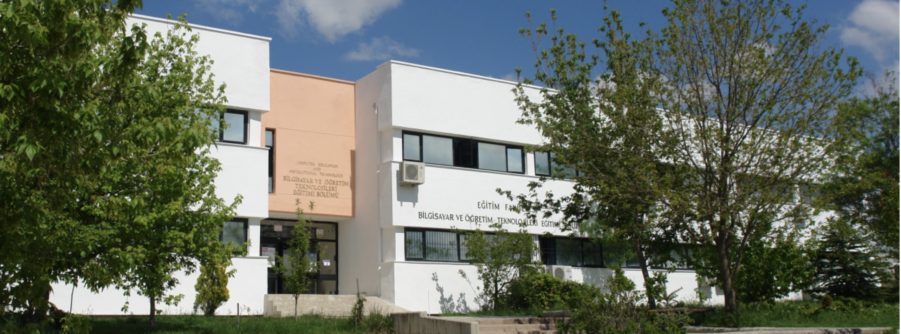

Department of Computer Education and Instructional Technology
The Department of Computer Education and Instructional Technology (CEIT) at METU is dedicated to integrating technology into education and training highly skilled educators and researchers. Our mission is to foster innovation, inspire learning, and prepare students to excel in the digital age.
Vision
The Department of Computer Education and Instructional Technology aims to be one of the world pioneers in the integration of the listed items.
In addition, the department aims to be a developed society in the globalizing world by training experts and teachers who will provide exemplary education and training services to improve the lives of individuals.
Mission
The mission of the Computer Education and Instructional Technology Department is to help prepare outstanding teachers, educators, academicians and researchers. In addition, to support and develop professional instructional design, using science, learning and the art of teaching together, using research methods that include various paradigms, using technology effectively, and analyzing, designing, developing, implementing and evaluating instructional practices are carried out effectively.
Value
Our Academic Staff
The CEIT Department is proud to have a highly qualified and experienced team of academic staff dedicated to student success and innovation in educational technology:
| Name | Title | Phone | |
|---|---|---|---|
| Prof. Dr. Soner Yıldırım | Department Chair | +90 312 210 4057 | soner@metu.edu.tr |
| Prof. Dr. Zahide Yıldırım | Professor | +90 312 210 3679 | zahidey@metu.edu.tr |
| Prof. Dr. Ömer Delialioğlu | Professor | +90 312 210 4198 | omerd@metu.edu.tr |
| Prof. Dr. Tuğba Tokel | Erasmus Coordinator | +90 312 210 7520 | stugba@metu.edu.tr |
| Assoc. Prof. Dr. Tarkan Gürbüz | Associate Professor | +90 312 210 4012 | tarkan@metu.edu.tr |
| Assoc. Prof. Dr. Göknur Kaplan | Associate Professor | +90 312 210 3673 | akilli@metu.edu.tr |
| Assoc. Prof. Dr. Erkan Er | Assistant Chair & Internship Coordinator | +90 312 210 7522 | erkane@metu.edu.tr |
| Instructor Dr. Banu Gündoğan | School Experience Coordinator | +90 312 210 3680 | banug@metu.edu.tr |
| Gülenay Vardarlı Korgan | Secretary | +90 312 210 4193 | vardarli@metu.edu.tr |
| Oktay Akkurt | Research Assistant | +90 312 210 7523 | oakkurt@metu.edu.tr |